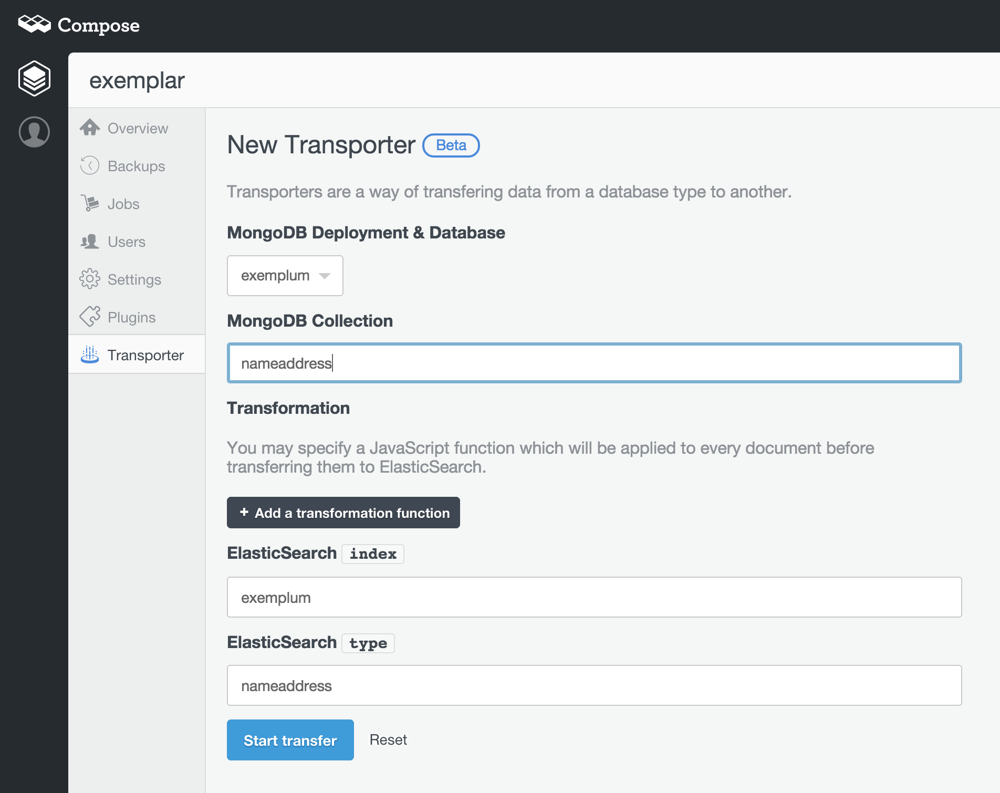

Transporter gets MongoDB data into Elasticsearch
If you’ve been wondering how to move your data in your Compose MongoDB databases into our new hosted Elasticsearch service, then stop wondering as the next stage in our Elasticsearch development has just arrived. We’ve just brought online, in beta, the first Compose Transporter.
An optional step is the transformation. You can add a JavaScript transformation function to your Transporter configuration. Each transported document is then fed to this transformation function which creates the document to be inserted into Elasticsearch. We automatically define this function to copy over all elements of the MongoDB document for importing into Elasticsearch, in the same way the Transporter copies data with no function set. You can then override it with your own definition allowing you to remap, filter and perform other changes to the data ready for your Elasticsearch analytics. We’ll have an article covering the more details of Transporter transformation next week.
The Transporter has been created to solve a transitional issue for Elasticsearch users. Traditionally, Elasticsearch has used river-plugins to import data but these are not only insecure, running arbitrary code within the database instance, but can also degrade performance, as that arbitrary code doesn’t work in tight synchronization with the database code. Elasticsearch is getting rid of river support and plan to move data import over to Logstash. At Compose, we don’t want you to wait and have been developing a solution to the data import issue as part of our Elasticsearch engineering. Thats why we are able to bring you an beta release of Transporter now.
The first iteration of Transporter is a bulk transfer tool and we charge only $0.0125 per hour of run time per run, rounding up to the hour on each run. That makes it economical as well as easy. This pricing is based on the capabilities of our current Transporter. Future iterations will support continuous data streaming and MongoDB to MongoDB transportation.
If you want to start using the Transporter now, head over to your Elasticsearch dashboard, and select Transporter from the menu of options. If you have any questions about how to use Transporter, drop a mail to support@compose.io.